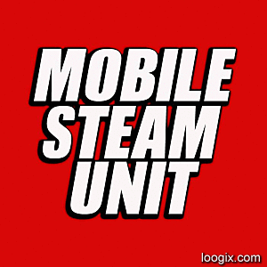
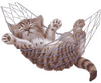
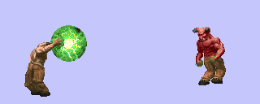

Hello, we are Mobile Steam Unit.
Welcome to our home on the world wide web!
Quite striking.
Blast with Steam
Make It Clean


Biography
January 2014. Early morning.
EPA dirty-water technician Doug Renegleis (pronounced re-nuh-GLESE) awoke from his beach-chair snooze at the edge of the Gowanus Canal to the buzzing of his phone.
It was an email.
Lab tests on the prior week's collection of Gowanus Canal sludge had uncovered unprecedented levels of ununseptium (element 117 in the periodic table), a highly radioactive evaporation residue resulting from the fusion of calcium and berkelium.
"What?" Renegleis muttered to himself. "That's impossible."
Renegleis was turning the phone over in his hand, trying to wrap his mind around the findings, when suddenly a growl came from the canal. Sprinting over to the edge, Renegleis arrived just in time to see what could only have been some type of hallucination: two giant construction workers, possibly twins, heaving mightily at a thick rope the end of which was tied to a hulking mess of goop and metal slowly emerging from the water. Renegleis strained his eyes into focus, the twins strained their muscles, and slowly the instrument revealed itself. Could it be? A giant bear trap.
On that cold January night Renegleis wrote a short a poem. Then BOOM.
$$$$$$$$$$$$$$$$$$$$$$$$$$$$$$$
In March of that same year four men were found inside a recently pressure-washed subway car, alive but unconscious, piled in a corner by the motorman's booth and enveloped in a sopping mess of frayed quarter-inch cables and black mayonnaise. Their ranks included a prominent luthier, a Zen HVAC technician, a retired garbage man, and a software rocketeer. Terrified that these men were the victims of some foul chemical experiment, the NYCTA workers turned their power washers on the crumpled bodies and let it rip.
Steam filled the car. The sound of yelling, wild laughter.
Minutes later, they emerged. Cleansed. Ready.
"Where's my keyboard?" said one.
"I don't know," said another. "But I think we're late for practice."
This is Mobile Steam Unit.

Blast with Steam
Make It Clean
